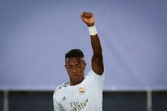
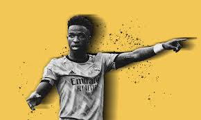
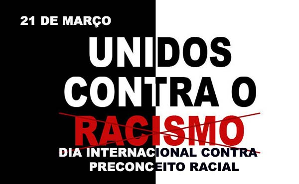
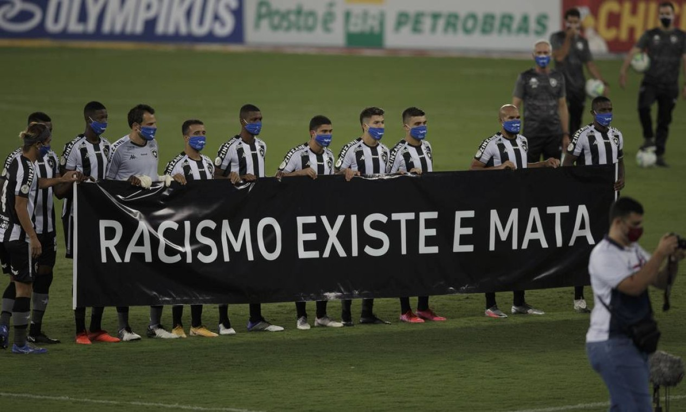
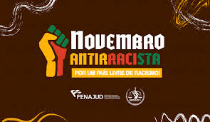
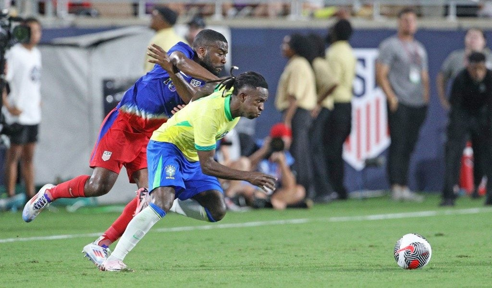

Galeria de Cultura Indígena
A cultura indígena no Brasil é representada em diversos aspectos: grafismos, pinturas, objetos do cotidiano, festas, rituais, arte e relação com a natureza.
Esta galeria reúne algumas imagens simbólicas para valorizar a diversidade e a riqueza dos povos indígenas. As imagens podem ser trocadas por fotos de fontes confiáveis ou desenhos feitos pelos próprios alunos.





